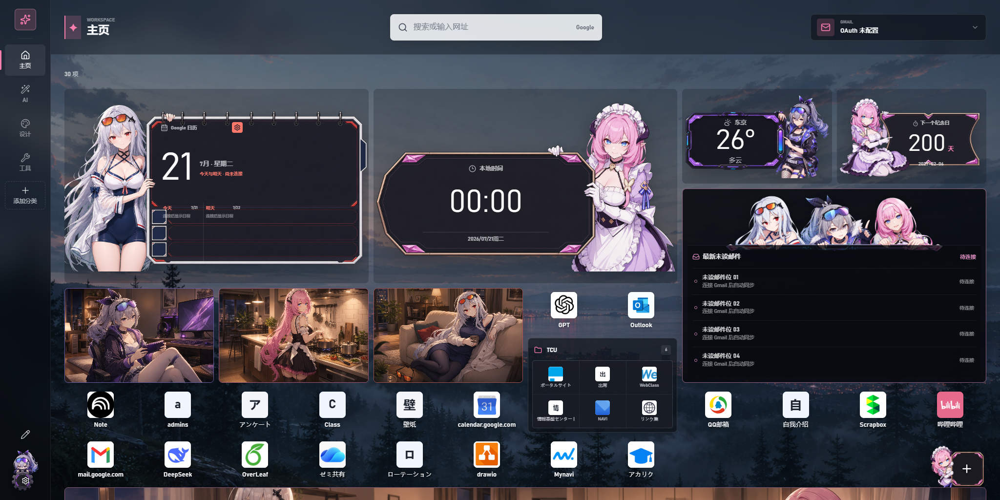

個人開発実アプリの開発時スクリーンショット（2026年7月の旧版、Google未接続）。キャラクター素材は本人の独自創作ではありません。公開作品紹介への掲載確認済みですが、原作者・権利者への帰属を明記し、画像自体は再配布しません。
カスタム新規タブ拡張
リンクや予定を探す手間を減らし、毎日の情報を見やすくまとめたい。AIを開発に活用して、自分の使い方に合わせた新規タブ拡張を制作しました。

Why I started
取り組んだきっかけ
よく使う情報に、もっとすぐ手が届くようにしたい。
既存の新規タブ拡張では、リンクの配置自由度、情報の見せ方、壁紙を含むバックアップが自分の使い方に合いませんでした。
What I cared about
大切にしたこと
- 自由度と使いやすさ
- 好きな場所にリンクを置けるだけでなく、移動・編集しやすく、文字が読みやすい画面にすることを意識しました。
- 使い続けられること
- 見た目だけで満足せず、壁紙を含む保存・復元やGoogle認証の継続も確認しました。
- AIの出力を確かめる
- 生成されたコードをそのまま完成扱いにせず、自分で毎日使い、ドラッグや表示の問題を一つずつ修正しました。
Results & learning
結果と学んだこと
自由なリンク管理、ウィジェット、予定・メール表示、ローカル壁紙とバックアップを統合した個人用の拡張を制作しました。
曖昧な「好み」や「使いにくさ」を、配置・文字・操作・保存方法という具体的な要件に変える経験になりました。
自分の担当と、生成AIの活用
要求整理、画面構成、機能の優先順位、AI生成コードの評価、実利用での確認と改善。
コード作成や画像案に生成AIを活用し、要件と画面構成、動作確認、修正判断は自分で繰り返しました。
取り組みの詳細
使い方から要件を決める
リンクの自由配置、ウィジェット、予定・メールの確認を一つの画面に整理しました。
保存と連携を実装する
Google Calendar・GmailのOAuth連携、拡張機能ストレージ、壁紙を含むバックアップを扱いました。
毎日の利用で改善する
ドラッグ操作、文字の読みやすさ、認証の継続や復元を確認し、問題を具体的な修正に落とし込みました。
掲載資料と現在の課題
認証の再接続・更新には改善課題があり、通学経路の機能は試作段階です。掲載画像は歴史的な開発画面であり、現在の動作保証ではありません。画像は公開作品紹介への掲載確認済みですが、原作者・権利者への帰属を尊重し、画像の再配布は行いません。
実アプリの保存済みスクリーンショットを変更せず使用。実際のメールやカレンダーの内容は含まない未接続画面を選びました。